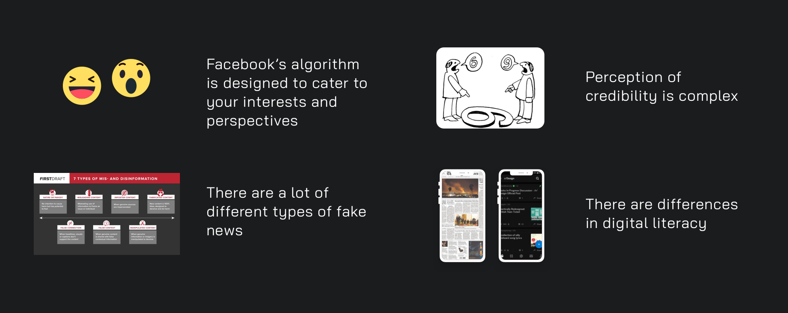
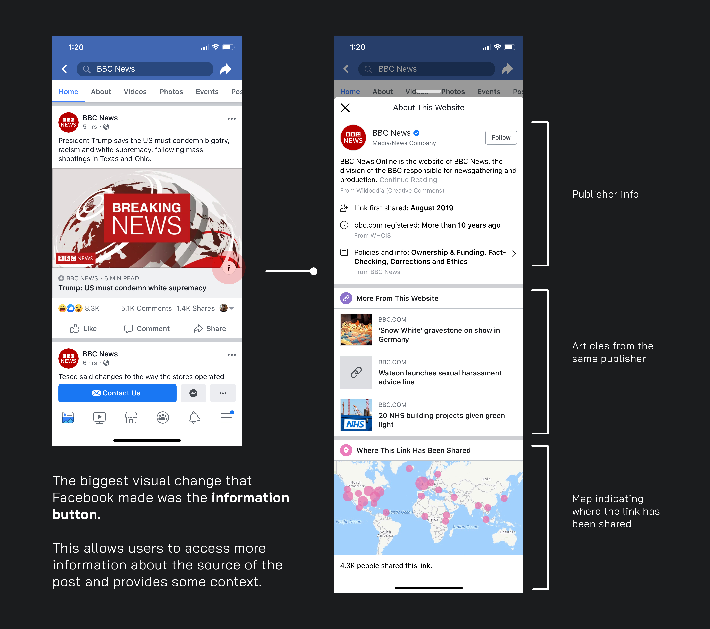

Fake News, Real Problems
UX Design, UX Strategy
Before I start, I want to state that I am in not affiliated with Facebook or other parties mentioned/used in this case study. All the work done is an exploration into the issue of fake news.
Introduction.
Fake news is a real problem. Although Facebook has been taking active measures in combating and reducing fake news on the Newsfeed platform, there is still work to be done for this ever evolving problem.
With the upcoming 2020 U.S. Presidential elections, it looks like it might be time to revisit this problem again. The U.S. isn't the only country whose social and political issues are impacted by fake news. This is a global phenomenon that is widespread.

Small deets.
Role
UX design, research + strategy.
Tools used:
Sketch, Adobe XD
Year
This project was completed over a cumulative period of 5 weeks from spring to summer 2019.
The Problem.
Facebook users are susceptible to fake news - regardless of demographics eg. age, education, political preference, etc. This is partially due to the large amount of information available and is projected to the users.
The issue of fake news on Facebook is complicated for a lot of reasons, but I've summed it down to these 4 key insights.
This creates a heavy cognitive load, so how can we help solve this?
The Exploration.
I asked users ranging from 20 - 40 years old about their thoughts on fake news on Facebook, and Facebook's current design solutions for this issue.
Let’s take a look at Facebook’s current designs in combating fake news.
When I asked users about the button, these lines stood out:
-- I only clicked on that information button once.
-- Oh, I didn’t even notice the information button, I thought it was for an ad or something!
-- What does this information mean though? It doesn’t really help me to understand the post in relations to other context or perspectives… nor does it provide relevant, related information.
As recent as April 2019, Facebook has taken several measures in combatting fake news asides from this design solution. Other solution interventions include academic analysis, manual review of posts and smart technologies to accurately target fake news for its removal.
For the purpose of this case study, I will be focusing on the user experience of articles on Facebook Newsfeed and optimizing the information button.
Reframing the Problem.
With this in mind, I approached my redesign in 3 main steps:
Goal: A practical and straightward 'get informed' experience
a. Story Context
b. Smart Recs
c. Past Read Insights
This is to solve the problem of reducing cognitive load and information processing, in order to encourage more critical analysis and awareness of fake news.
The Redesigns.
There's a spectrum of Facebook users, from those that only use it to message privately, share everything about their lives or do business online.

Regardless, it’s clear that not one user is resistant to fake news. However, it’s not Facebook’s place to determine what is considered fake news, which leaves a lot of ambiguity and work to the viewer of the article.
When people are overloaded with information, or do not care enough to critically analyze what they see, how can we make information processing and critical analysis easier?
Redesign 01 - Story Context
In this case, I propose that forced friction can be a solution to help induce critical analysis in users, and actually reduce friction.
Story Context: a brief slideshow overlay with critical details is displayed over the article image on auto-scroll.
This interaction is triggered by viewport position and hover duration over the article.
“It takes more information to make you believe something you don’t want to believe than something you do” APA Fact Check

I choose a moving slideshow so that users are aware of the changing information on their screens, even if they were not initially paying attention to it. They can choose to manually flip to the page of the slideshow they want, or click onto the post to read more about it.
Again, the purpose of this forced friction experience is to strongly suggest users to pay more attention to critical, useful elements of the post for the purpose of combating fake news.
It’s probably not possible to make everyone critical thinkers, but we can make the process of analysing easier, and as neutral as possible.
Redesign 02 - Smart Recs
Now, I think that Facebook’s ‘information button’ is a pretty powerful tool for providing users with more contextual information. I just think that it’s not being optimized to its best potential, namely - the type of content that is displayed in the tab.

This is an opportunity to provide information and articles from alternative perspectives and sources that is related to article on hand for a more neutral analysis.

I decided to keep with the bubble-esque effect that is currently in use for some of Facebook’s content after exploring Newsfeed.
I chose to display 3 related articles, all from different news sources, but the user has the option to view more. In terms of content for each bubble, I wanted to keep it straightforward so that it does not overwhelm the user.
* People's opinions:
When I was exploring Facebook Newsfeed and Pages + Groups, I noticed that there was an ‘opinions’ section when you search for certain key terms eg. Trump. It appears that this section is what other Facebook users are talking about connected to that specific key term or topic.

I've never seen this before until now
I think is a pretty useful tool that should be integrated into the information tab, as it allows other users to see what people outside of their circles are saying.
However, one critique of this is that it actually is not helpful because some users may post offensive or biased opinions. Furthermore, it might just show the perspectives of users that just actually post things on their walls, which is not reflective of all opinions about a topic.
Instead, one solution to that could be live, public discourse space where Facebook posts made by politicians, influencers or other types of agencies are shared instead of people's opinions.
Let's see what the big people are saying
Redesign 03 - Past Read Insights
Another idea for this problem is to create a place for comparing and analysis. I think it might be helpful if Facebook automatically compiles articles that you’ve been reading (or even been exposed to), and sets a space where you can see (compare) what articles other people are reading.
The purpose of this space to provide insights and opinions from different demographics (outside of your echo chamber). Furthermore, it can help users become more aware of their current views and interests, but also suggest alternative views at the same time.
For current users, in order to see the feed of different pages and people means you have to follow them all. People often don’t want to do that because they do not want to clutter their feeds or reveal personal influences.

I forget what I read all the time...
Depending on how effective this solution may be, simple filters such as categories can be applied to the articles so that users can quickly look for information. Doing this may help reduce the illusory effect (increased exposure to content = increased chance of accepting it as the truth).
This concept was inspired by The Wall Street Journal's Red Feed, Blue Feed. Although their project presents a very striking comparison of Facebook posts between liberals and conservatives, one constraint this is presentation is: who determines the range of political standing?
Ultimately, I believe a better focus is to gently encourage users to critically analyze by easing the way information is presented on Facebook Newsfeed.
Not only does this encourage better critical thinking for combatting fake news, these potential solutions will make it harder for fake content to pass as real news.
Going Forward.
Through this exploration, it has taught me to be careful of the subtle nuances in UX design, for example, how do you present information to users without being pushy? (eg. so that they don't leave one platform for another) Or allow the users to feel like they are in control of the information they are exposed to online in an unbiased way?
As a result of this project, I've come to appreciate the research skills I've gained so far in uni, but more importantly, many problems are universal and affect people everywhere - and anyone with a desire to understand and use human empathy to solve these problems can help solve them.
Thanks for sticking it out to the end, I'll be updating this portfolio as fast as I can. Check back soon!